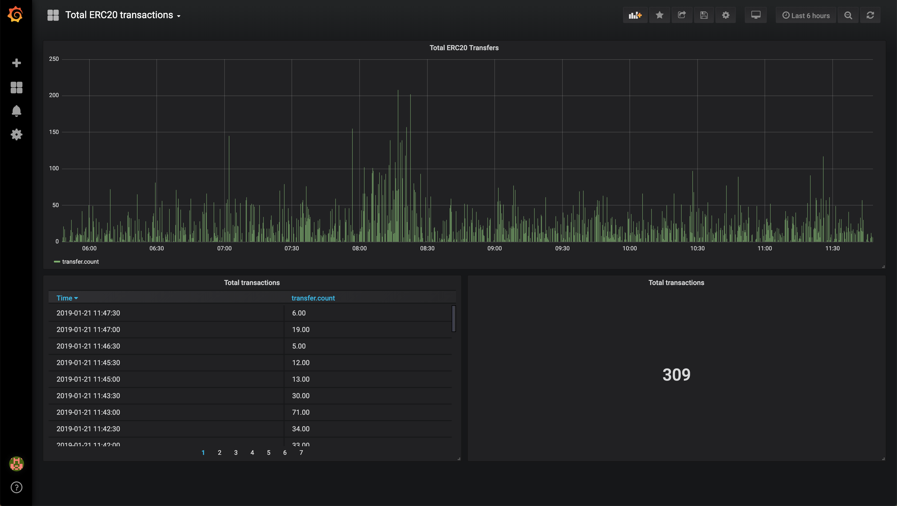

Concept
We need to have a tool to monitor the different transfers on ERC20 on Ethereum and provide some kind of graphs that display all the informations needed.
Business implication
- For ICO they could be able to monitor the volume they are doing during their ICO
- Can extract patterns looking at the graphs, like when there is a high volume of transfer (meaning that it might be a bot)
- Connecting some AI system to be able to predict the future transfers and predict the price
- Expand to ERC721 and have a tool to monitor how your ERC721 is performing
Material
Here is a proof of concept using Influxdb and Grafana.
The MESG application that runs all that is present here
You can test it here http://erc20-analytics.demo.mesg.com:3000/ with the following credentials:
login: test
password: test
